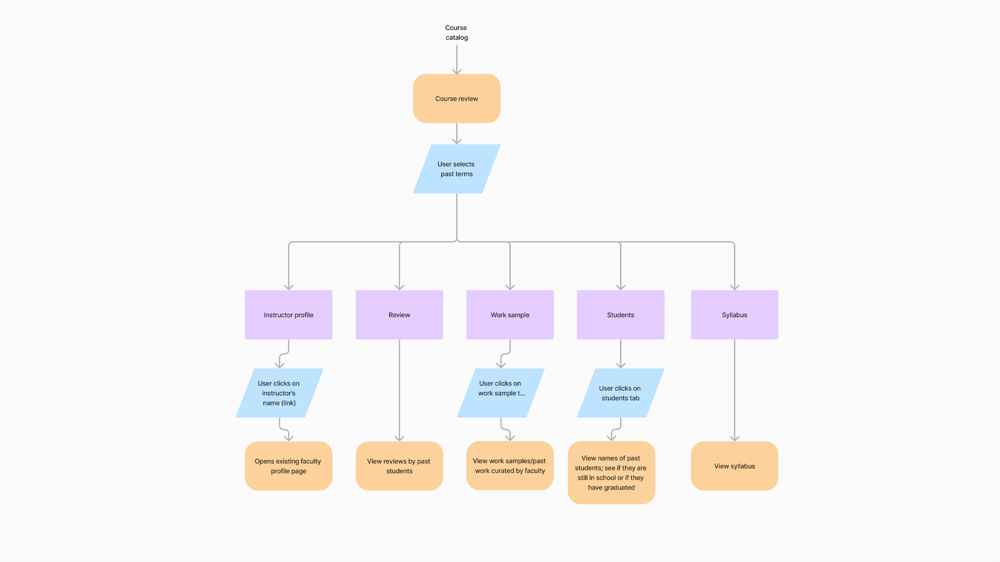
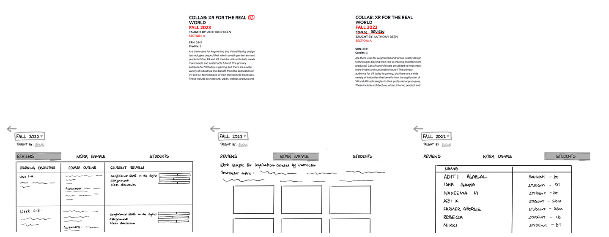
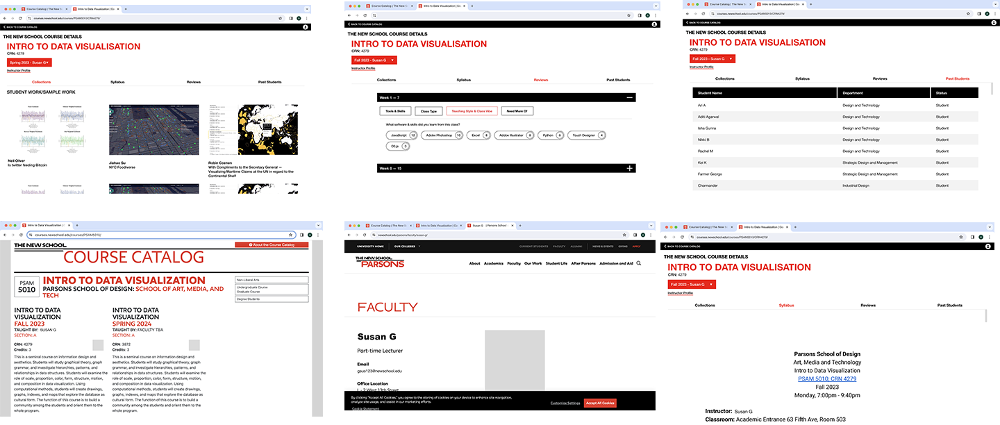

A collaborative project to enhance the registration process at The New School with the introduction of a Course History Platform. This dynamic addition provides access to past student work samples, syllabi, and course feedback, serving as a direct communication channel for prospective students. Seamlessly integrated into The New School’s course catalogue, the initiative ensures a user-friendly experience, transforming registration into a rich exploration of academic history.
Personal Connection
As an international student at The New School, I’ve struggled to gather crucial information about courses before registration. The current process lacks necessary details, with scattered information sources making it even more challenging. This project is personal to me, aiming to streamline and improve access for students like myself, providing comprehensive information about courses, faculty teaching styles, and insights from past students on one platform.
Problem Statement
The current class registration process at The New School presents a significant challenge as it lacks comprehensive information about classes making it difficult to make informed decisions about the course selections.
Proposed Solution
Focus on providing deep insights into class content, expectations, and the academic atmosphere and facilitate connections with past students for valuable insights, ensuring a more informed and empowering academic journey to enrich the course selection process.
Competitive Analysis
NYU Rate My Courses

Rate My Professor
Subjectivity and Anonymity:
Platforms like “Rate My Professor” face subjectivity challenges due to user anonymity, allowing for potentially biased and unfair evaluations. The lack of accountability leads to inconsistent and unverified feedback, making it difficult for students to trust the accuracy of the information provided.
Incomplete Professor Evaluation:
Existing platforms often lack a comprehensive view of a professor’s teaching abilities, as the absence of a standardized evaluation process contributes to inconsistent feedback, making it challenging for students to form a well-rounded understanding of a professor’s performance.
Insufficient Course Information:
Platforms like “Rate My Courses” at NYU may lack specific course details, hindering students from gaining a thorough understanding of a class. Inadequate insights into teaching styles and limited feedback on the overall academic experience leave students without crucial information for making informed course selections.
Need for a Tailored and Reliable Solution:
A robust and tailored platform is crucial to address these challenges, offering accurate, detailed, and context-rich insights into professors and courses. Prioritizing transparency, accountability, and standardized evaluation methods, this solution aims to be a reliable source of information, empowering students to make well-informed academic decisions.
Student 2
Group Interview (Student) 1
Faculty 1
Interview Affinity Mapping Overview

Key Takeaways
Streamlining Course Information Access
Students face challenges in accessing clear information regarding class expectations, learning outcomes, and teaching styles prior to registration. Dispersed information across the Course Catalog and unofficial sources often requires time-consuming efforts, such as contacting professors or seeking advice from past students.
Boosting Student Engagement with Reviews
Implementing a review system within the class structure could promote greater engagement from students, facilitating the sharing of valuable feedback. This approach aims to enhance the accessibility of information and improve the overall understanding of courses, benefiting the academic community.
Immediate Feedback Limitations in Course Evaluation
Immediate impact on student experience is limited by the lack of actionable feedback from course evaluations, which may also be hindered by concerns over negative or biased reviews.
Leveraging Feedback for Course Improvement
Implementing a feedback system that provides actionable insights can positively influence future classes, addressing current student needs while mitigating potential issues arising from public reviews.
User Flow
Sketches & Lo-Fi Prototypes
Mid-Fi Prototypes & Usability Testing
Branding | The New School